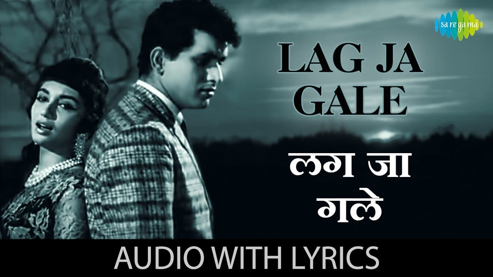
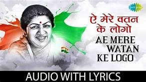
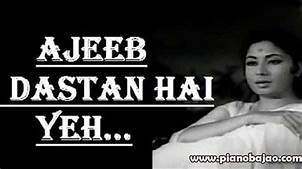

Lata Mangeshkar (born as Hema Mangeshkar; 28 September 1929 – 6 February 2022) was an Indian playback singer and occasional music composer. She is widely considered to have been one of the greatest and most influential singers in India. Her contribution to the Indian music industry in a career spanning seven decades gained her honorific titles such as the Nightingale of India, Voice of the Millennium and Queen of Melody.She recorded songs in over thirty-six Indian languages and a few foreign languages, though primarily in Hindi, Bengali, and Marathi.She received several accolades and honors throughout her career. In 1989 the Dadasaheb Phalke Award was bestowed on her by the Government of India.
In 2001, in recognition of her contributions to the nation, she was awarded the Bharat Ratna, India's highest civilian honour; she is only the second female singer, after M. S. Subbulakshmi, to receive this honour. France conferred on her its highest civilian award, Officer of the National Order of the Legion of Honour, in 2007.She was the recipient of three National Film Awards, 15 Bengal Film Journalists' Association Awards, four Filmfare Best Female Playback Awards, two Filmfare Special Awards, the Filmfare Lifetime Achievement Award and many more. In 1974, she was one of the first Indian playback singers to ever perform at Royal Albert Hall, London. Her last recorded song was a rendition of the Gāyatrī Mantra at Mukesh Ambani's daughter Isha Ambani's wedding.
In 2001, Lata Mangeshkar was honored with the Bharat Ratna, the biggest award in Indian culture. Her other awards include Padma Bhushan in 1969, Padma Vibhushan in 1999, Zee Cine Award for Lifetime Achievement in 1999, Dadasaheb Phalke Award in 1989, Maharashtra Bhushan Award in 1997, NTR National Award in 1999, Bharat Ratna in 2001, Legion of Honor in 2007 (France's highest honor), ANR National Award in 2009, 3 National Film Awards, Filmfare awards, and Filmfare Lifetime Achievement Award. The Greatest Indian poll of Outlook India ranked Lata Mangeshkar 10th in 2012. Apart from this, she was also awarded the Best Music Director Award by the Maharashtra State Government for the film Sadhi Manase. "Airanichya Deva Tula" was voted best song from the same film. A book on Lata Ji, titled "Lata Mangeshkar - A Musical journey" was also published by Yatindra Mishra. It tells the story of the Queen of Hindi Music from the 1940s to the present day.


